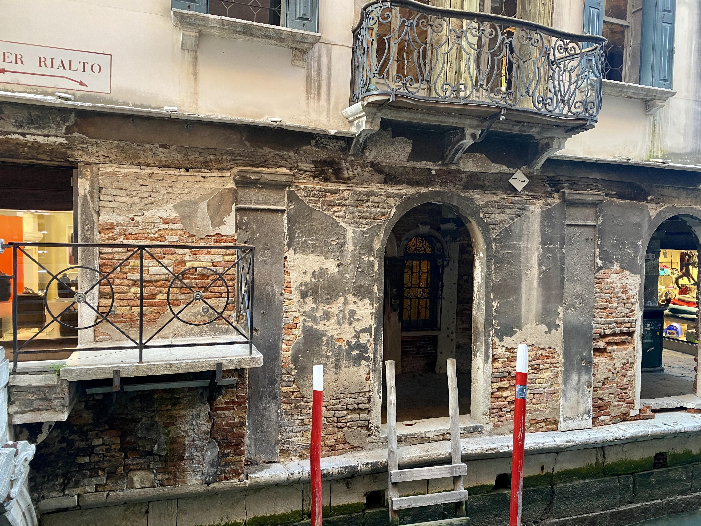
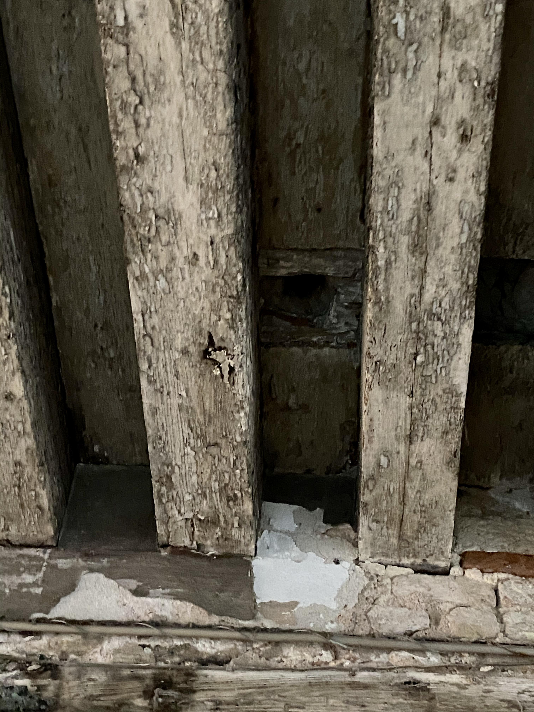
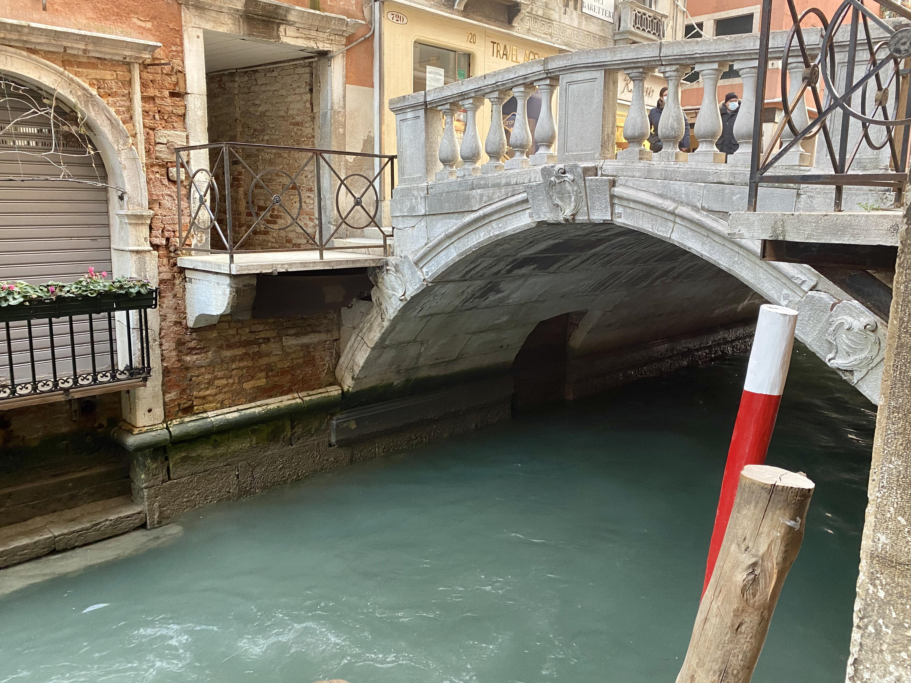

Near the Ponte dei Bareteri (Hatter’s Bridge), you will find the Venier brothel. Brothels were clubs where people could meet, converse, gamble, and more, and were very much in vogue in the 18th century.

Stand in front of door number 4939 and look up: you will see a hole. This served to monitor any unwelcome guests.

There were more than one hundred brothels in Venice at that time. If necessary, there was a secret passage under the bridge for a fast and discreet getaway.
